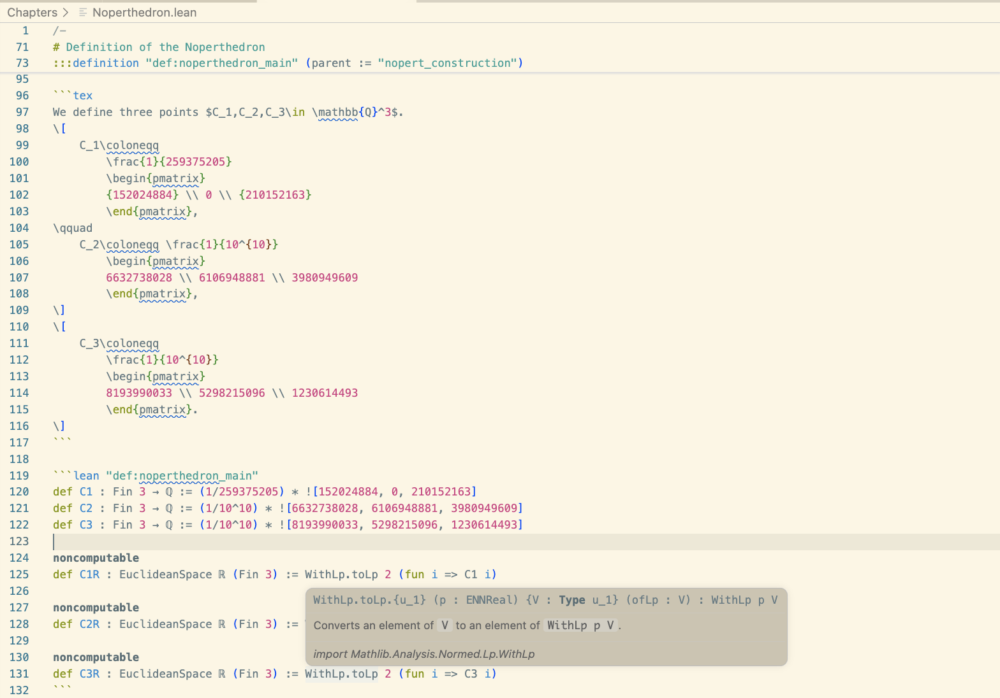
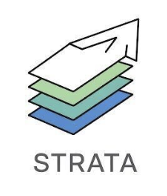
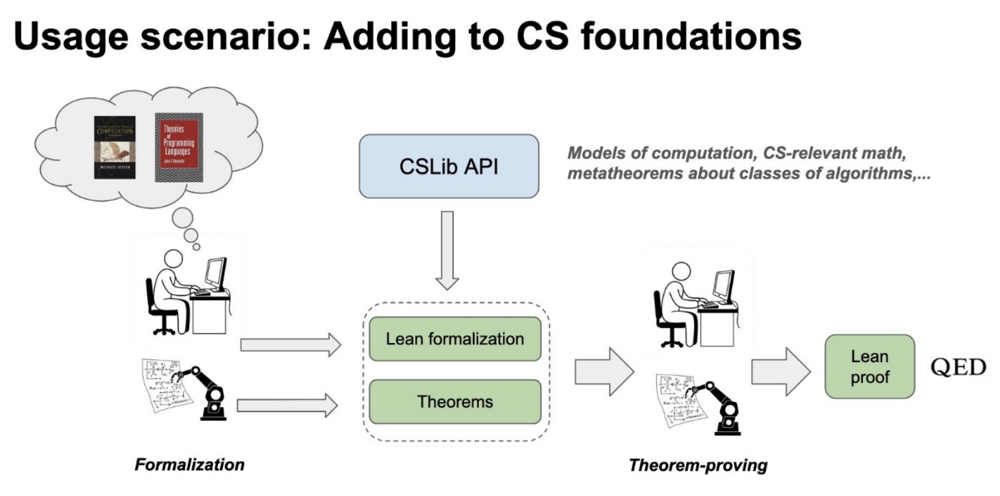

Lean: Extensible, Scalable, Trusted.
Signal Shot, announced April 21, 2026
Signal, Beneficial AI Foundation, and the Lean FRO announced a public moonshot.
Verify the Signal protocol and its Rust implementation in Lean.
Signal secures the messages of 100M+ people
What is Lean?
A programming language and a proof assistant
Same language for definitions and proofs. No translation layer.
Lean is implemented in Lean. Very extensible.
Lean is scalable.
Small trusted kernel. Proofs can be exported and independently checked.
Lean is a Game
"You have written my favorite computer game" — Kevin Buzzard, Prof. Mathematics, Imperial College
def odd (n : Nat) : Prop := ∃ k, n = 2 * k + 1
theorem square_of_odd_is_odd : odd n → odd (n * n) := by
intro ⟨k₁, e₁⟩
simp [e₁, odd]
exists 2 * k₁ * k₁ + 2 * k₁
lia
The "game board": you see goals and hypotheses, then apply "moves" (tactics).
Each tactic transforms the goal until nothing remains.
The kernel checks the final proof term.
The Kernel Catches Mistakes
example : odd 3 := ⟨2, by decide⟩
You don't need to trust me, or my automation. You only need to trust the small kernel.
An incorrect proof is rejected immediately.
Lean has multiple independent kernels.
You can build your own and submit it to arena.lean-lang.org.
The State of Lean
240,000+ unique installations: VS Code (140K) + Open VSX (102K). 8,000+ GitHub repositories.
Ecosystem: 8,000+ GitHub repositories depending on Lean.
Every IMO medal-level AI system with formal proofs used Lean.
Industry: AWS, Google, Microsoft, Mistral, Nethermind, Galois, others.
"Lean has become the de facto choice for AI-based systems of mathematical reasoning." — ACM SIGPLAN Award
Mathlib: 2.2M+ lines of formalized mathematics
The Lean Mathematical Library
-
Formal Mathematics = Machine-Checkable Mathematics
-
270,000+ formalized theorems.
-
750+ contributors.
-
2.2M+ lines of Lean.
-
1,500+ type classes and 20,000+ instances.
-
Fewer than 1,000 definitions separate Mathlib from full modern-research-math coverage.

"I’m investing time now so that somebody in the future can have that amazing experience." — Heather Macbeth, Prof. Mathematics, Imperial College
The Liquid Tensor Experiment
In 2020, Peter Scholze posed a formalization challenge.
"I spent much of 2019 obsessed with the proof of this theorem, almost getting crazy over it. I still have some small lingering doubts." — Peter Scholze
Johan Commelin led a team that verified the proof, with only minor corrections.
They verified and simplified it without fully understanding the proof. Lean was a guide.
"The Lean Proof Assistant was really that: an assistant in navigating through the thick jungle that this proof is." — Peter Scholze

Lean Is Taking Mathematics by Storm
Six Fields Medalists engaged: Tao, Scholze, Viazovska, Gowers, Hairer, Freedman.
-
Sphere Eversion (completed) — Massot, Nash, and van Doorn
-
Equational Theories Project (completed) — Tao
-
Carleson's Theorem (completed) — van Doorn
-
Sphere Packing — Birkbeck, Hariharan, Lee, Ma, Mehta, Viazovska
-
Fermat's Last Theorem — Buzzard
-
Inter-Universal Teichmuller (IUT) Theory — Mochizuki

Formal Math is More Maintainable
"We had formalized the proof with this constant 12, and then when this new paper came out, we said, 'Okay, let's update the 12 to 11.' And what you can do with Lean is that you just in your headline theorem change a 12 to 11. You run the compiler and... of the thousands of lines of code you have, 90% of them still work." — Terence Tao, Lex Fridman interview
Reading vs Writing Formal Math
-
It is easier to read formal math than write it.
-
Formal math is easier to read than LaTeX.
-
You can click through, inspect definitions, check types.
-
AI can explain formal proofs, and is making the writing part easier.
-
Humans need to be able to read formal math.

Verso: Written in Lean. Checked by Lean.
-
Future math papers will have Lean code that is checked.
-
Lecture notes, papers, and slides — all in one tool.
-
These slides are written in Verso.
-
Every example is checked by Lean.
-
lean-lang.org is written in Verso.
-
My homepage is written in Verso.
-
Verso is a domain-specific language embedded in Lean.
-
Built by David Thrane Christiansen at the Lean FRO.

Verso Blueprint: A Map for Large Formalizations
-
Massot's Lean Blueprints have been widely adopted in the Lean community.
-
Verso Blueprint is the next generation.
-
Large projects like FLT (50+ contributors) and sphere packing need more than proofs. They need a map.
-
It tracks definitions, lemmas, and dependencies.
-
The blueprint is a Lean document with inline code that is type-checked.
-
When AI generates 200,000+ lines of formalization, humans need tools to visualize and understand what was built.
-
Built by Emilio Jesús Gallego Arias at the Lean FRO.
-
Emilio ported major projects onto it: FLT, Carleson, Sphere Packing, Noperthedron.
Verso Blueprint: TeX and Lean in One Document

Verso Blueprint: Dependency Graph

Lean Verbose
Natural language tactics to teach mathematics using Lean 4.
Playing the Lean game using mouse clicks and natural language.
Lean Verbose is implemented in Lean by Patrick Massot.

What We Learned from Mathematics
-
Machine-checkable proofs enable a new level of collaboration.
-
Auto refactoring and generalization for free.
-
It is not just about proving but also understanding complex objects and proofs, getting new insights, and navigating through structures beyond our cognitive abilities.
"Lean enables large-scale collaboration by allowing mathematicians to break down complex proofs into smaller, verifiable components. With Lean, we are beginning to see how AI can accelerate the formalization of mathematics, opening up new possibilities for research." — Terence Tao, Fields Medalist, UCLA

Software Verification
Lean is not only for mathematics.
Cedar (AWS)
-
Authorization policy engine. Verified in Lean.
-
No version ships unless proofs pass.
"We've found Lean to be a great tool for verified software development." — Emina Torlak
-
Proved validator soundness in 18 person-days.

SymCrypt (Microsoft)

-
Core cryptographic library. Verified using Aeneas + Lean.
-
They verify the Rust code as written by software engineers.
-
Code is evolving (new optimizations for specific hardware). They must adapt to rewrites.
"We are verifying code faster than we can write it" — Son Ho, SymCrypt, Microsoft
Anneal: Verified Unsafe Rust (Google)

Google's zerocopy team building "literate verification" for unsafe Rust using Lean and Aeneas.
Unsafe Rust accounts for ~2/3 of vulnerabilities in the Rust ecosystem. Safety invariants documented only in prose comments.
Anneal: developers write Lean specifications directly in Rust doc comments. cargo anneal verify runs the pipeline: Charon → Aeneas → Lean.
Strata: Language Syntax and Semantics (AWS)
Strata: extensible platform for formalizing language syntax and semantics. Built in Lean. Open source.
Key idea: dialects (inspired by MLIR). Orthogonal, composable building blocks for modeling programming constructs. Define a dialect, get AST, parser, pretty printer, type checker.
-
Core, C_Simp, Laurel, SMTLib, Python, Boole
-
Laurel pipeline: Python/Java/JavaScript → Laurel → Strata Core → VCG → SMT
-
Dialect Definition Mechanism (DDM): embedded DSL in Lean for defining syntax and typing rules

Kraken: x64 Semantics in Lean (Google)
Kraken is an x64 model written in Lean.
It is intended for verifying sequential software that performs computations using common registers and memory.
Project started after the Lean@Google Hackathon last December.
Veil: Verified Distributed Protocols
Veil: verification of distributed protocols. Built on Lean as a library using Lean metaprogramming.
-
Push-button verification via SMT (cvc5/Z3) for decidable fragments
-
Full interactive proofs in Lean when automation falls short
-
Seamless transition between the two modes
-
Foundational: Veil's VCG is proven sound w.r.t. the specification language semantics.
-
16 distributed protocol case studies. All 16 verified. Ivy failed on 2. 87.5% verified in under 15 seconds.

Move Borrow Checker: The Problem
Ilya Sergey (VERSE lab) formalized and verified Move's borrow checker in Lean. 39,000 lines of mechanized metatheory in 27 working days, using an AI coding assistant.
Move: smart contract language for the Sui and Aptos blockchains. Rust-like ownership discipline. References are access paths rooted in local variables. No lifetime annotations.
The borrow checker: tracks reachability between references using regular expressions over field paths.
CSLib
CSLib aims to be a foundation for teaching, research, and new verification efforts, including AI-assisted.
A Foundation for Computer Science in Lean

Steering committee: Clark Barrett, Swarat Chaudhuri, Jim Grundy, Pushmeet Kohli, Leo de Moura, Fabrizio Montesi.
Signal Shot
Signal Shot is a public moonshot to verify the Signal protocol and its Rust implementation using Lean.
It is a joint effort of Signal (Rolfe Schmidt), the Beneficial AI Foundation (Max Tegmark), and the Lean FRO.
The pieces:
-
Aeneas,
-
Mathlib and CSLib,
-
Symbolic proof automation (
grind) and scalable verification generation (SymM), -
and AI.
AI
Accelerating formal verification.
"Vibe Proving"
So many people are choosing Lean that even casual users are proving theorems with ChatGPT. "We used ChatGPT to vibe code a Lean proof."

"The bottleneck for using AI to create strategies and make conjectures is we have to rely on human experts and the test of time to validate whether something is plausible or not." — Terence Tao, Dwarkesh Patel interview
International Mathematical Olympiad (IMO)
To date, every AI achieving medal-level IMO performance with formal proofs used Lean.
-
AlphaProof (Google DeepMind) — silver medal, IMO 2024
-
Aristotle (Harmonic) — gold medal, IMO 2025
-
SEED Prover (ByteDance) — silver medal, IMO 2025
AI startups
-
Leanstral (Mistral): the first open-source code agent designed for Lean 4.
-
Axiom: solved 12/12 problems on Putnam 2025.
-
DeepSeek Prover-V2: 88.9% on miniF2F. Open-source, 671B parameters.
-
Harmonic: Built the Aristotle AI — gold medal, IMO 2025.

zlib in Lean
AI converted zlib (a C compression library) to Lean.
The Lean version passed the test suite, and then proved the code correct.
theorem zlib_decompressSingle_compress (data : ByteArray) (level : UInt8)
(hsize : data.size < 1024 * 1024 * 1024) :
ZlibDecode.decompressSingle (ZlibEncode.compress data level) = .ok data
Decompression always recovers the original data. Every compression level. Machine-checked.
The barrier is no longer AI capability. It is platform readiness.
Radix: 10 AI Agents, One Weekend
10 AI agents built a verified embedded DSL with proved optimizations in a single weekend.
-
52 theorems.
-
5 verified compiler optimizations.
-
Determinism, type safety, memory safety.
-
Interpreter correctness — sound and complete.
-
27 modules, ~7,400 lines of Lean.
-
I did not touch the code. Zero lines. Full agent autonomy.
AI Changed How I Work
AI is not just changing who uses Lean. It changed how I work.
Kim Morrison (Lean FRO) showed me a major refactoring step: more than 10,000 lines changed across Mathlib, implemented by AI.
Since then, AI has removed the pain of developing software.
I used to believe my superpower was that I could tolerate a lot of pain. That superpower is no longer relevant.
AI now isolates issues, tries new ideas, runs experiments, analyzes performance, and much more.
The Validation Bottleneck
"The bottleneck for using AI to create strategies and make conjectures is we have to rely on human experts and the test of time to validate whether something is plausible or not." — Terence Tao, Dwarkesh Patel interview
Lean automates the validation. That's the unlock.
AI will write proofs. AI will even draft specifications from natural language.
But reading the formal statement and saying "yes, this is what I meant." remains the human job. The formal statement is the trust anchor.
The Kernel as AI Safety Infrastructure
"It's really important with these formal proof assistants that there are no backdoors or exploits you can use to somehow get your certified proof without actually proving it, because reinforcement learning is just so good at finding these backdoors." — Terence Tao
The kernel's soundness is not just a theoretical property. It is AI safety infrastructure.
RL agents will find every shortcut. The kernel is the one thing they can't fake.
Who Watches the Provers? | Comparator | Validating a Lean Proof
The Infrastructure
Everyone wants the platform to be neutral, open, scalable, extensible, and trustworthy.
That requires an institution whose job is the platform.
The Lean FRO
Nonprofit. 20 engineers. Open source. Controlled by no single company.
Sebastian Ullrich and I launched it in August 2023.
28 releases and 8,000+ pull requests merged since its launch.
"Lean is not a research project anymore. We run the Lean FRO as a startup."
The Lean project was featured in: NY Times, Quanta, Scientific American, Wired, etc.
Conclusion
I opened this talk with Signal Shot: verifying the Signal protocol and its Rust implementation in Lean.
That is not an isolated project. It is the result of years of work on mathematics, extensibility, scalability, verification, and infrastructure.
Formalization is not just about proving. It is about understanding, communicating, and building trust at a scale beyond our cognitive abilities.
More of the world will depend on systems that do not have to be taken on faith.
“Lean is a great language with good tools, a large library and a huge, enthusiastic user community that has lately accomplished astounding things." — Larry Paulson, creator of Isabelle
Thank You
Leo de Moura
lean-lang.org | leanprover.zulipchat.com